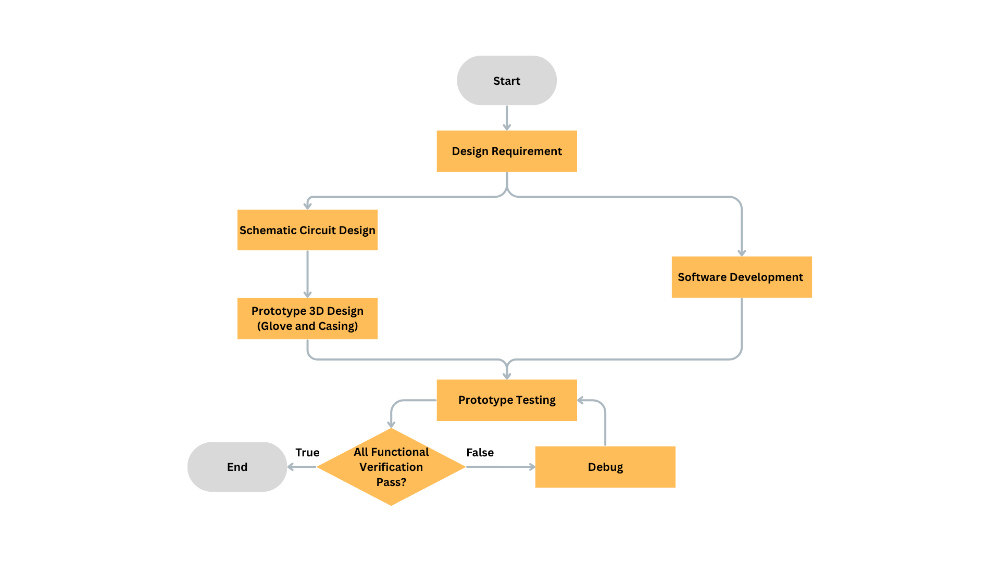
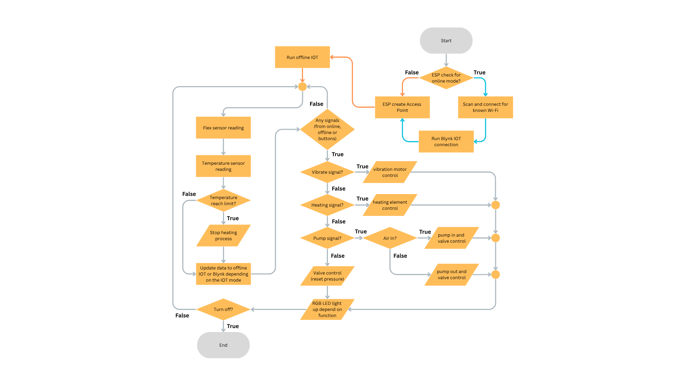
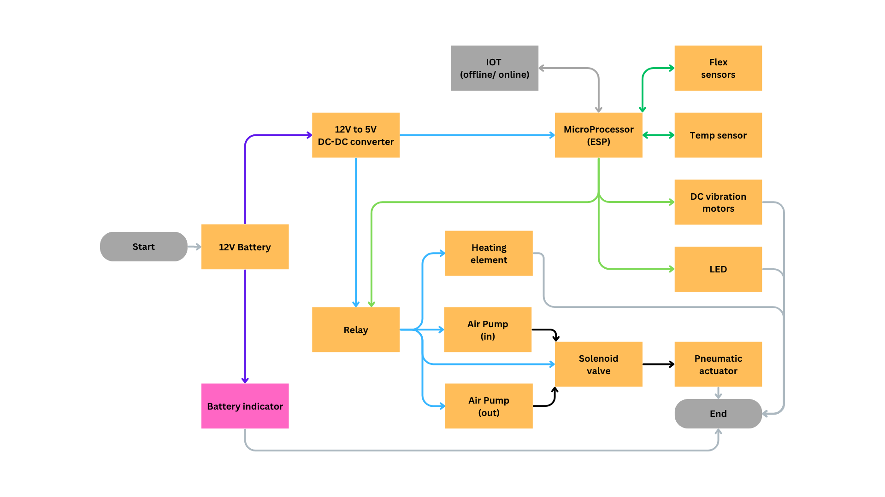
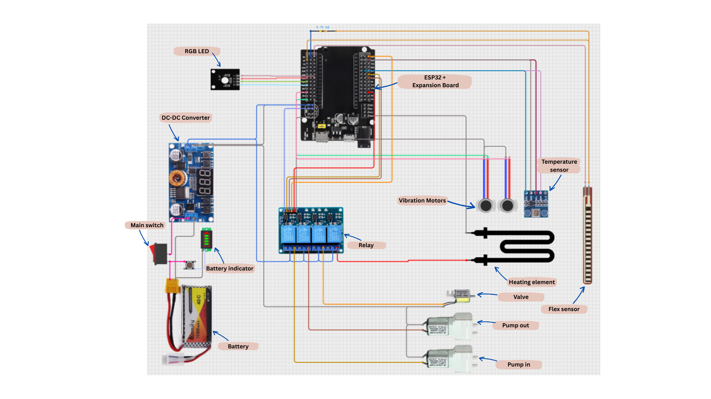
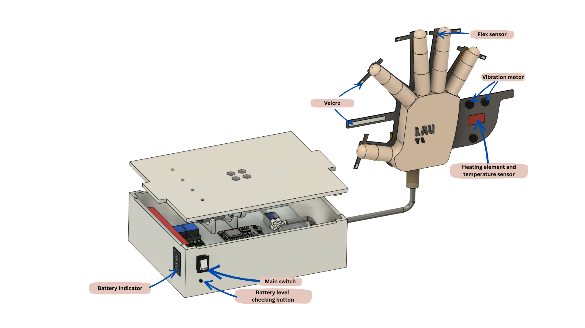
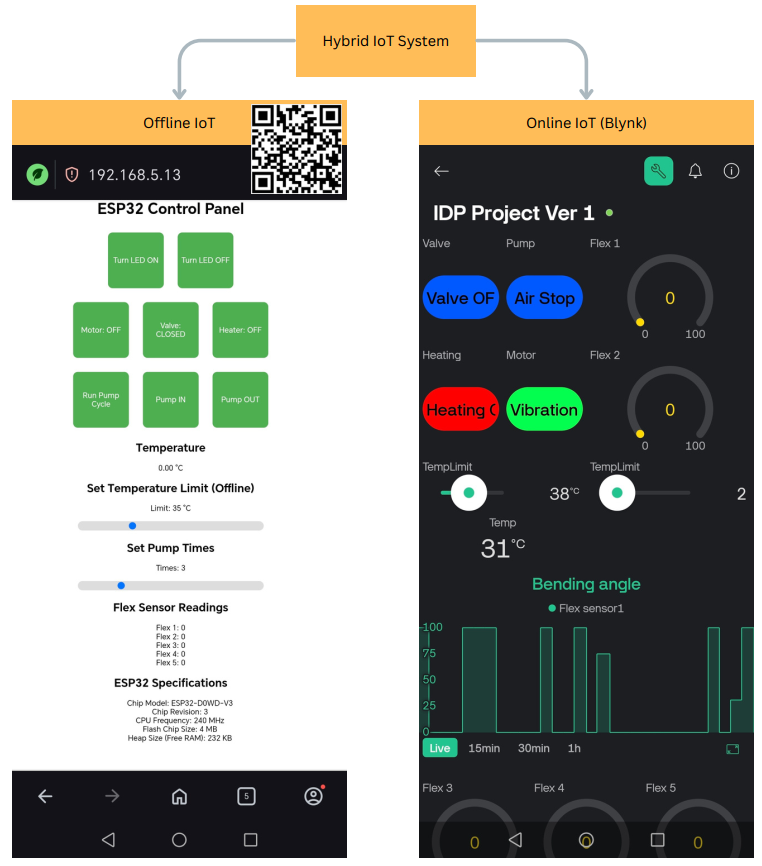
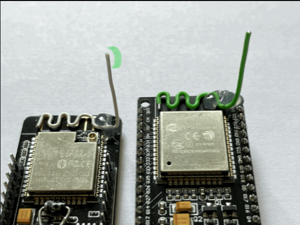
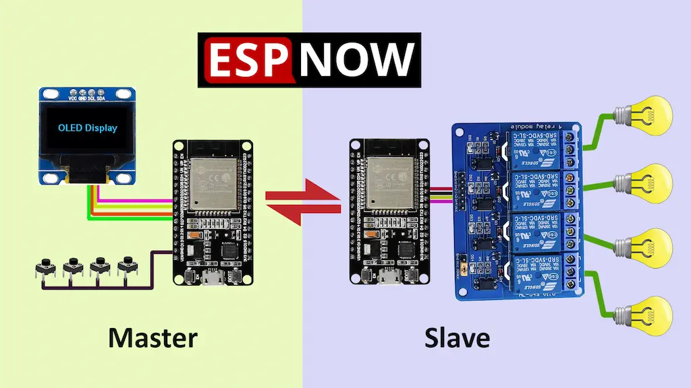
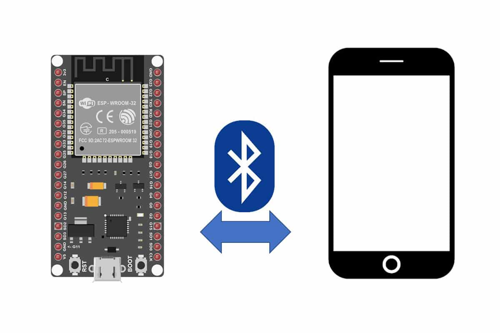
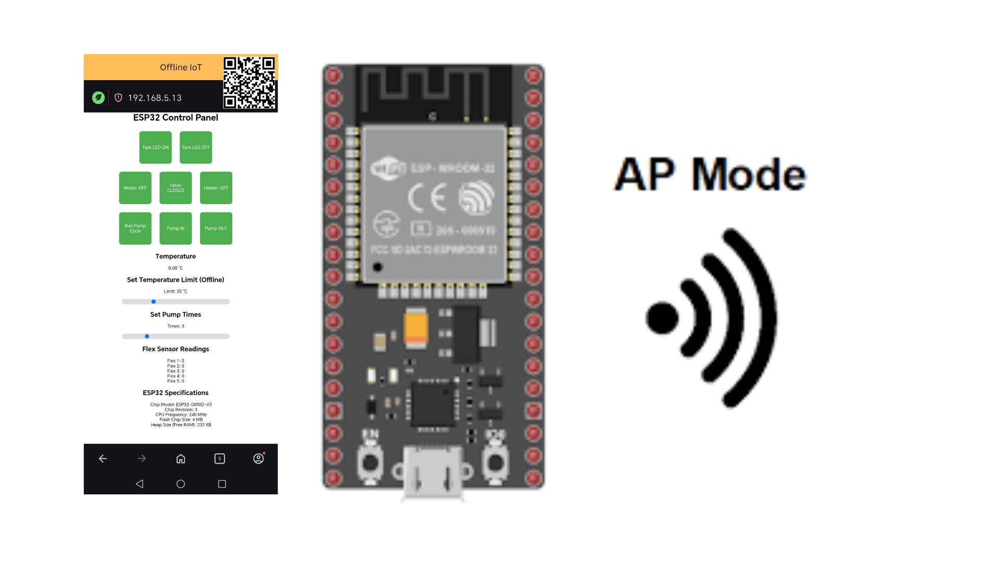

Hybrid IoT-Based Smart Glove for Stroke Rehabilitation
Core technologies that make StrokeEase a smart, safe and adaptive rehabilitation companion.







Used an external antenna to increase received WiFi signal strength. Improvement in real environments was minimal, so the approach was not adopted as the main solution.

Explored ESP‑NOW communication between multiple ESP devices. While it enabled direct device-to-device links, hardware cost and long‑term connectivity stability were concerns.

Investigated ESP Bluetooth integration with MIT App Inventor. The solution worked in principle but became complex for web integration and future feature expansion.

Final solution: ESP32 operates as an Access Point and local web server. This provides reliable offline IoT control without relying on external WiFi infrastructure.
The system automatically disables heating when the glove’s internal temperature exceeds a defined temperature limit, protecting the user from overheating during therapy.
The RGB indicator transitions from yellow to red as temperature approaches the cutoff threshold. The cutoff limit can be adjusted through the IoT interfaces to match the patient’s comfort and clinical requirements.
L1: 33% Duty Cycle – gentle inflation suitable for early-stage or sensitive patients.
L2: 50% Duty Cycle – moderate intensity for progressive strengthening.
L3: 100% Duty Cycle – maximum assistive movement to challenge hand muscles.
Customizable inflation/deflation durations allow therapists to tune the therapy pattern to the patient’s endurance and goals.
Watch StrokeEase in action across hardware, firmware, and hybrid IoT demonstrations.